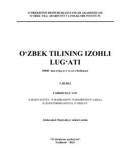

OTO'zbek tilining 80 mingdan ortiq so'z va birikmalarini o'z ichiga olgan izohli lug'ati.
Ushbu asar O'zbekiston Respublikasi Fanlar akademiyasi O'zbek tili, adabiyoti va folklori instituti tomonidan tayyorlangan o'zbek tilining izohli lug'atining birinchi jildi bo'lib, A dan F gacha bo'lgan so'zlarni o'z ichiga oladi. Kitobda 80000 dan ortiq so'z va so'z birikmalarining ma'nolari, qo'llanish o'rinlari batafsil tushuntirilgan. Nashr keng kitobxonlar ommasi, tilshunoslar va talabalar uchun mo'ljallangan.